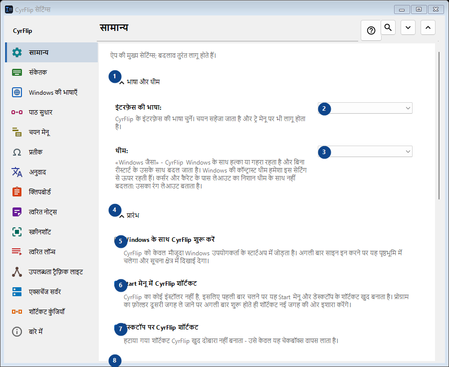
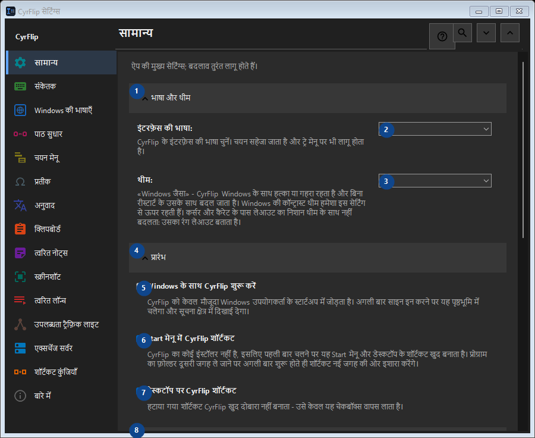

सामान्य
इसका उपयोग
ऐप की मुख्य सेटिंग्स; बदलाव तुरंत लागू होते हैं।


उपयोग का क्रम
सेटिंग तुरंत लागू होती हैं। कोई अनिवार्य क्रम नहीं है; नीचे दिए समूहों का उपयोग करें।
तत्व
1. भाषा और थीम
बताई गई कार्रवाई के लिए इस आदेश का उपयोग करें। स्वीकार करने से पहले पुष्टि पढ़ें।
आपके शॉर्टकट2. इंटरफ़ेस की भाषा
पास के लेबल के अनुसार मान चुनें या दर्ज करें। आगे बढ़ने से पहले जाँचें।
आपके शॉर्टकट3. थीम
पास के लेबल के अनुसार मान चुनें या दर्ज करें। आगे बढ़ने से पहले जाँचें।
आपके शॉर्टकट4. प्रारंभ
बताई गई कार्रवाई के लिए इस आदेश का उपयोग करें। स्वीकार करने से पहले पुष्टि पढ़ें।
आपके शॉर्टकट5. Windows के साथ CyrFlip शुरू करें
CyrFlip को केवल मौजूदा Windows उपयोगकर्ता के स्टार्टअप में जोड़ता है। अगली बार साइन इन करने पर यह पृष्ठभूमि में चलेगा और सूचना क्षेत्र में दिखाई देगा।
आपके शॉर्टकट6. Start मेनू में CyrFlip शॉर्टकट
CyrFlip का कोई इंस्टॉलर नहीं है, इसलिए पहली बार चलने पर यह Start मेनू और डेस्कटॉप के शॉर्टकट खुद बनाता है। प्रोग्राम का फ़ोल्डर दूसरी जगह ले जाने पर अगली बार शुरू होते ही शॉर्टकट नई जगह की ओर इशारा करेंगे।
आपके शॉर्टकट7. डेस्कटॉप पर CyrFlip शॉर्टकट
हटाया गया शॉर्टकट CyrFlip खुद दोबारा नहीं बनाता - उसे केवल यह चेकबॉक्स वापस लाता है।
आपके शॉर्टकट8. पावर और स्क्रीन
बताई गई कार्रवाई के लिए इस आदेश का उपयोग करें। स्वीकार करने से पहले पुष्टि पढ़ें।
आपके शॉर्टकट9. कंप्यूटर को स्लीप में न जाने दें
चालू रहने तक Windows निष्क्रियता पर स्लीप या हाइबरनेट नहीं होगा — लंबे डाउनलोड, कॉपी या रेंडर के लिए उपयोगी। स्थिति सहेजी जाती है: चालू छोड़ा गया स्विच पुनः आरंभ के बाद भी कंप्यूटर को जगाए रखेगा - CyrFlip आपकी बैटरी पर नज़र नहीं रखेगा।
आपके शॉर्टकट10. स्क्रीन चालू रखें (वीडियो की तरह)
स्क्रीन निष्क्रियता पर बंद या लॉक नहीं होती, ठीक वैसे ही जैसे वीडियो देखते समय। यह पासवर्ड लॉक (Win+L या सुरक्षा नीति) को रद्द नहीं करता। स्थिति सहेजी जाती है: चालू छोड़ा गया स्विच पुनः आरंभ के बाद भी स्क्रीन को चालू रखेगा।
आपके शॉर्टकट11. सेटिंग्स स्थानांतरण
बताई गई कार्रवाई के लिए इस आदेश का उपयोग करें। स्वीकार करने से पहले पुष्टि पढ़ें।
आपके शॉर्टकट12. सेटिंग्स निर्यात करें...
बताई गई कार्रवाई के लिए इस आदेश का उपयोग करें। स्वीकार करने से पहले पुष्टि पढ़ें।
आपके शॉर्टकट13. सेटिंग्स आयात करें...
बताई गई कार्रवाई के लिए इस आदेश का उपयोग करें। स्वीकार करने से पहले पुष्टि पढ़ें।
आपके शॉर्टकट14. आयात से पहले की सेटिंग्स बहाल करें...
अभी पुनर्स्थापित करने को कुछ नहीं है: CyrFlip पहले बदलाव से ठीक पहले मूल स्थिति सहेजता है। यह तत्व अभी उपलब्ध नहीं है। पहले सुविधा चालू करें या कोई प्रविष्टि चुनें।
आपके शॉर्टकट15. सेटिंग्स का बैकअप Documents में रखें
चालू रहने पर CyrFlip हर सेटिंग का रोलिंग बैकअप Documents\CyrFlip\Backups में रखता है - तीन नवीनतम रखे जाते हैं। बैकअप Microsoft Store से पुनर्स्थापना में बचा रहता है: नई इंस्टॉल इसे ढूँढकर पुनर्स्थापित करने का प्रस्ताव देती है। फ़ाइल में आपके होस्ट, साइट और परिदृश्य हैं - इसे निजी रखें।
आपके शॉर्टकट16. बैकअप फ़ोल्डर खोलें
बैकअप साधारण सेटिंग्स फ़ाइलें हैं, तारीख से नामित। किसी एक को कॉपी करने या दूसरे कंप्यूटर पर ले जाने के लिए फ़ोल्डर खोलें।
आपके शॉर्टकट